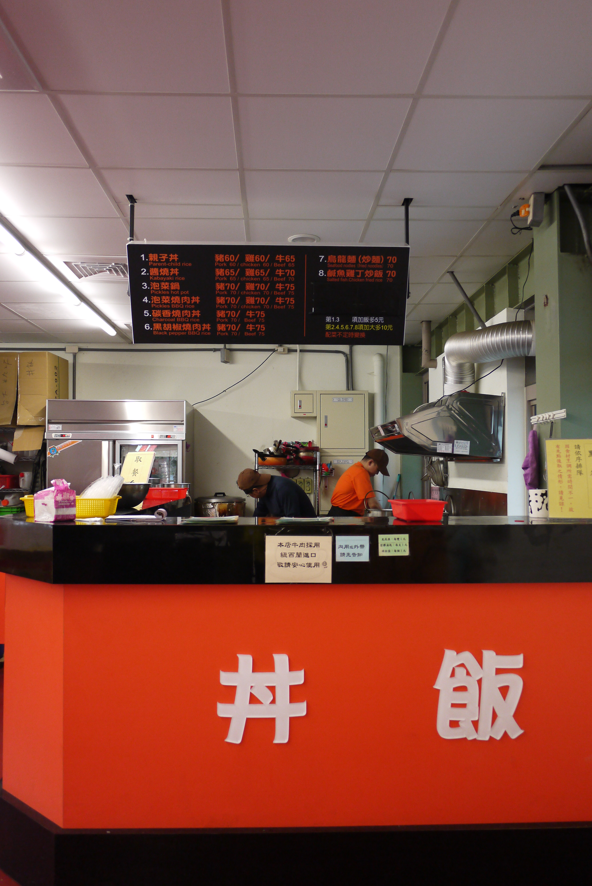
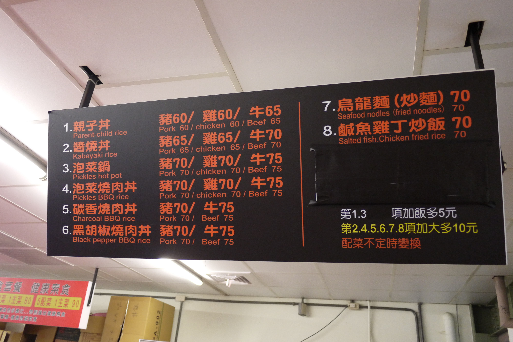
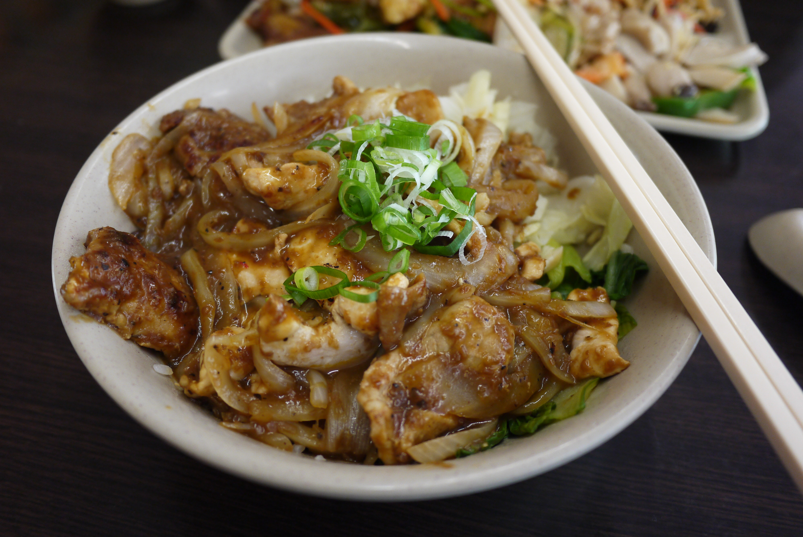

女九宿舍餐廳丼飯
自助餐 | 丼飯 | 滷味 | 輕鬆吧 | 早餐- 本校營業地點位置 女生第九宿舍
- 餐飲業者名稱 女九宿舍餐廳:丼飯
- 公司名稱 美義有限公司
- 營業時間及休息日
星期一~五 11:20AM~1:30PM;4:40PM~7:30PM - 聯絡電話 (02)2366-0622
- 營業項目、型態 快餐
- 業者簡介
來女九就吃得到日本平民美食-各式丼飯及日式烏龍麵,主廚特製的獨門配方，醬汁香醇濃郁、肉塊鮮嫩，兩者奏出絕妙的交響曲，一定要來親身體驗。
招牌餐點:親子丼飯、黑胡椒燒肉丼飯、鹹魚雞丁炒飯...等。
餐廳業者參考照片
- 
- 
- 